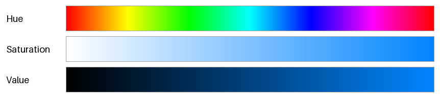
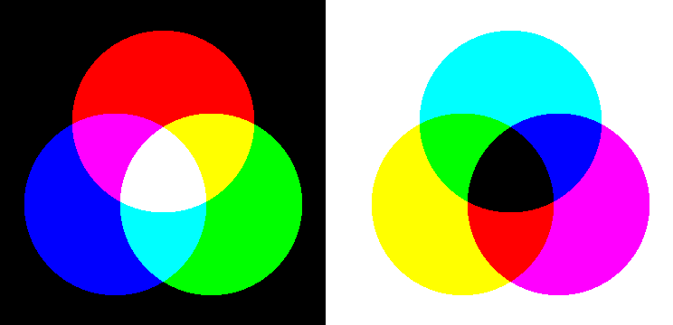
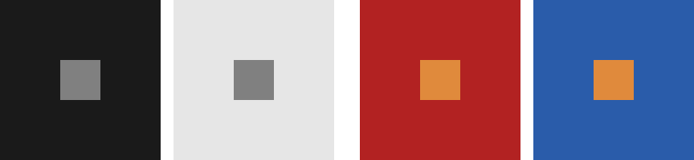

色の基礎
配色を考える前に、色がどのように生まれ、どのように見えるかを整理しておく。本章の内容は、以降の全ての章の前提になる。
光と色
人間の目に見える光（可視光）は、波長がおよそ 380 nm から 780 nm の電磁波である。波長の短い側から順に、紫、青、緑、黄、橙、赤と感じられる。
ただし、色は光そのものの性質ではない。光が目に入り、網膜の細胞の反応を脳が解釈した結果として生じる感覚である。明るい場所で色を感じ取るのは、網膜にある 3 種類の錐体（すいたい）細胞である。
錐体 |
最もよく反応する波長 |
主に感じ取る色 |
|---|---|---|
S 錐体 |
約 420 nm |
青 |
M 錐体 |
約 530 nm |
緑 |
L 錐体 |
約 560 nm |
黄緑から赤 |
どのような光も、目の中では 3 種類の錐体の反応の強さという 3 つの数値に置き換えられる。そのため、色は 3 つの数値の組で表せる。これが、ディスプレイが赤・緑・青の 3 色の光だけで多くの色を表現できる理由であり、次の章で扱う色空間が 3 次元である理由でもある。
また、波長の成分がまったく異なる 2 つの光でも、3 種類の錐体の反応が同じであれば同じ色に見える。この現象を条件等色（メタメリズム）という。ディスプレイに映った黄色は赤と緑の光を混ぜたものであり、黄色の波長の光は含まれていないが、錐体の反応が同じになるので黄色に見える。
色の三属性
色は、次の 3 つの性質（色の三属性）で説明できる。
属性 |
意味 |
|---|---|
色相（Hue） |
赤、黄、緑、青のような色味の種類。色相を順に並べると、赤から紫を経て赤に戻る環になる。 |
彩度（Saturation） |
色の鮮やかさ。彩度が低いほど灰色に近づく。 |
明度（Lightness） |
色の明るさ。明度が最も高い色は白、最も低い色は黒である。 |
白、灰色、黒のように色味のない色を無彩色といい、明度だけを持つ。それ以外の色を有彩色という。
図 1 は、色の三属性を、次の章で扱う HSV という表し方で 1 つずつ変化させたものである。上から順に、色相だけ、彩度だけ、明度（HSV では V）だけを左から右へ変化させている。

図 1 色の三属性を 1 つずつ変化させた帯（HSV）
HSV は計算が簡単で広く使われているが、HSV の V は人間が感じる明るさとは一致しない。図 1 の色相の帯でも、黄色の付近は明るく、青の付近は暗く見える。この問題とその解決方法は色空間で扱う。
加法混色と減法混色
色を混ぜる方法には、光を重ねる加法混色と、光を吸収する材料（色材）を重ねる減法混色の 2 種類がある。

図 2 加法混色（左）と減法混色（右）
項目 |
加法混色 |
減法混色 |
|---|---|---|
三原色 |
赤（R）、緑（G）、青（B） |
シアン（C）、マゼンタ（M）、イエロー（Y） |
混ぜるほど |
明るくなり、白に近づく |
暗くなり、黒に近づく |
主な用途 |
ディスプレイ、プロジェクター、照明 |
印刷、絵の具、写真のプリント |
計算 |
光の強さを足し合わせる |
光の反射率を掛け合わせる |
加法混色の三原色を 2 つずつ混ぜると、減法混色の三原色になる。たとえば、赤と緑の光を重ねるとイエローになる。逆に、減法混色の三原色を 2 つずつ混ぜると、加法混色の三原色になる。たとえば、シアンは赤の光を、イエローは青の光を吸収するので、2 つを重ねると緑の光だけが残る。
実際の印刷では、C、M、Y に黒（K）を加えた 4 色（CMYK）のインクを使う。3 色のインクを重ねただけでは純粋な黒にならないことと、文字などの黒い部分に 3 色分のインクを使うのは無駄であることが理由である。
画面上で作った色は加法混色で表現されている。同じ色を印刷すると、表現できる色の範囲（色域）が異なるため、特に鮮やかな色は画面より沈んだ色になることが多い。印刷物の配色の注意点は印刷物の配色で扱う。
色の見え方の性質
同じ色でも、周りの色や面積によって見え方が変わる。配色を考えるときは、色を単独で評価するのではなく、実際に隣り合う色や使う面積と合わせて確かめる必要がある。
同時対比
隣り合う色の影響を受けて、色が実際とは違って見える現象を同時対比という。図 3 の左の 2 つの図の中央の正方形は、どちらも同じ灰色である。暗い背景の上では明るく、明るい背景の上では暗く見える（明度対比）。

図 3 同時対比。中央の正方形は、左の 2 つが同じ灰色、右の 2 つが同じ橙色である。
右の 2 つの図の中央の正方形は、どちらも同じ橙色である。赤の背景の上では黄みがかって見え、青の背景の上ではより鮮やかに見える。前者は、背景の色相から遠ざかる向きに色相がずれて見える現象（色相対比）である。後者は、補色（色相が反対の色）に囲まれると彩度が高く見える現象（彩度対比）である。
同時対比があるため、同じ色でも、明るい背景の配色（ライトテーマ）と暗い背景の配色（ダークテーマ）では違った印象になる。UI の配色で、ボタンやアイコンの色を背景ごとに調整するのはこのためである（実践: UI の配色設計を参照）。
面積効果
同じ色でも、塗る面積が大きいほど明るく、鮮やかに見える。これを面積効果という。小さな色見本で選んだ鮮やかな色を画面の背景全体に塗ると、想像より派手で落ち着かない印象になる。広い面積に使う色は、色見本で選ぶときよりも彩度を下げておくとよい。配色の面積比については配色の基本で扱う。
まとめ
色は光そのものではなく、3 種類の錐体の反応から生まれる感覚である。そのため、色は 3 つの数値で表せる。
色は色相、彩度、明度の三属性で説明できる。
ディスプレイは加法混色で、印刷は減法混色で色を表現する。
色の見え方は、周りの色（同時対比）や面積（面積効果）によって変わる。